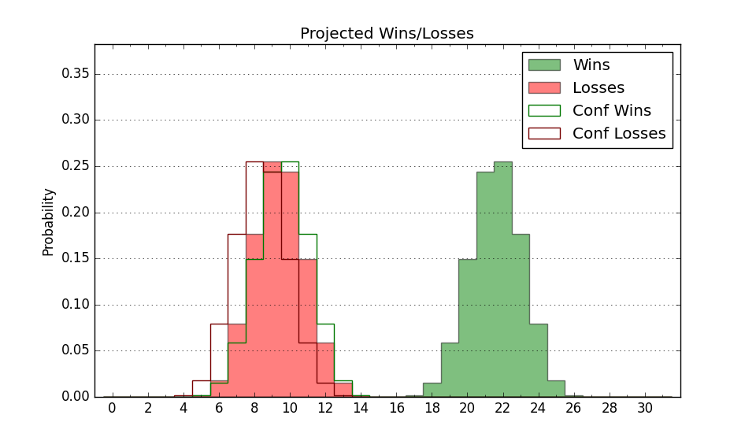

| Home | Game Probabilities | Conferences | Preseason Predictions | Odds Charts | NCAA Tournament |
| City: | Reno, Nevada | |
| Conference: | Mountain West (6th)
| |
| Record: | 3-4 (Conf) 15-5 (Overall) | |
| Ratings: | Comp.: 14.8 (56th) Net: 14.9 (59th) Off: 111.0 (73rd) Def: 96.2 (44th) SoR: 57.9 (50th) |
| Remaining | ||||||
|---|---|---|---|---|---|---|
| Date | Opponent | Win Prob | Pred. | |||
| 2/2 | San Jose St. (178) | 89.9% | W 79-64 | |||
| 2/6 | @ Utah St. (34) | 28.1% | L 71-77 | |||
| 2/9 | San Diego St. (25) | 51.9% | W 70-69 | |||
| 2/13 | New Mexico (22) | 49.6% | L 76-77 | |||
| 2/17 | @ UNLV (92) | 47.8% | L 72-73 | |||
| 2/20 | Wyoming (171) | 89.5% | W 79-64 | |||
| 2/23 | @ San Jose St. (178) | 72.4% | W 74-68 | |||
| 2/27 | @ Colorado St. (41) | 29.3% | L 69-75 | |||
| 3/1 | Fresno St. (214) | 92.6% | W 78-61 | |||
| 3/5 | @ Boise St. (55) | 35.0% | L 67-71 | |||
| 3/9 | UNLV (92) | 75.7% | W 76-68 | |||
| Previous | Game Score | |||||
| Date | Opponent | Win Prob | Result | Off | Def | Net |
| 11/7 | Sacramento St. (314) | 97.0% | W 77-63 | -7.6 | -1.2 | -8.8 |
| 11/12 | @Washington (71) | 40.8% | W 83-76 | 8.1 | 4.8 | 12.9 |
| 11/15 | Pacific (357) | 98.9% | W 88-41 | -5.2 | 23.3 | 18.2 |
| 11/18 | Portland (297) | 96.4% | W 108-83 | 23.0 | -21.7 | 1.3 |
| 11/29 | Montana (137) | 85.4% | W 77-66 | -8.8 | 7.8 | -1.1 |
| 12/2 | Loyola Marymount (138) | 85.7% | W 73-59 | -2.2 | 11.3 | 9.1 |
| 12/6 | UC Davis (170) | 89.3% | W 80-68 | -0.6 | -5.9 | -6.5 |
| 12/9 | (N) Drake (48) | 47.9% | L 53-72 | -30.1 | 3.4 | -26.7 |
| 12/13 | Weber St. (134) | 85.0% | W 72-55 | -4.7 | 13.5 | 8.9 |
| 12/17 | @Hawaii (193) | 75.3% | W 72-66 | -3.5 | -1.0 | -4.5 |
| 12/21 | (N) Temple (227) | 88.1% | W 80-56 | 4.9 | 10.6 | 15.5 |
| 12/22 | (N) TCU (23) | 36.0% | W 88-75 | 30.5 | -2.6 | 27.9 |
| 12/24 | (N) Georgia Tech (133) | 75.4% | W 72-64 | -4.0 | 5.3 | 1.3 |
| 1/6 | @Fresno St. (214) | 78.5% | W 72-57 | 6.8 | 4.7 | 11.5 |
| 1/9 | Air Force (176) | 89.9% | W 67-54 | -0.1 | 2.1 | 2.0 |
| 1/12 | Boise St. (55) | 64.7% | L 56-64 | -23.6 | 3.2 | -20.4 |
| 1/17 | @San Diego St. (25) | 24.1% | L 59-71 | -5.8 | -3.9 | -9.6 |
| 1/20 | @Wyoming (171) | 71.6% | L 93-98 | 24.3 | -41.4 | -17.1 |
| 1/24 | Colorado St. (41) | 58.5% | W 77-64 | 13.2 | 11.1 | 24.2 |
| 1/28 | @New Mexico (22) | 22.5% | L 55-89 | -14.1 | -19.8 | -33.9 |
| Stats & Trends | |||||
|---|---|---|---|---|---|
| Current | Day | Week | Month | Season | |
| Composite | 14.8 | -1.7 | -0.9 | -2.4 | +1.2 |
| Comp Rank | 56 | -11 | -2 | -18 | -- |
| Net Efficiency | 14.9 | -1.9 | -1.0 | -3.1 | -- |
| Net Rank | 59 | -14 | -7 | -19 | -- |
| Off Efficiency | 111.0 | -0.7 | -0.6 | -0.6 | -- |
| Off Rank | 73 | -4 | -3 | -15 | -- |
| Def Efficiency | 96.2 | -1.2 | -0.4 | -2.5 | -- |
| Def Rank | 44 | -12 | -1 | -14 | -- |
| SoS Rank | 110 | +12 | +32 | +113 | -- |
| Exp. Wins | 21.6 | -0.7 | +0.1 | -2.1 | +2.7 |
| Exp. Conf Wins | 9.6 | -0.7 | +0.1 | -2.1 | -1.1 |
| Conf Champ Prob | 1.0 | -3.1 | -1.3 | -19.8 | -18.8 |

| Advanced Stats | ||
|---|---|---|
| Stat | Value | Rank |
| Off Eff FG % | 0.521 | 116 |
| Off Ast Ratio | 0.160 | 73 |
| Off ORB% | 0.268 | 199 |
| Off TO Rate | 0.124 | 35 |
| Off FT Ratio | 0.468 | 3 |
| Def Eff FG % | 0.462 | 43 |
| Def Ast Ratio | 0.131 | 97 |
| Def ORB% | 0.256 | 101 |
| Def TO Rate | 0.156 | 118 |
| Def FT Ratio | 0.321 | 168 |